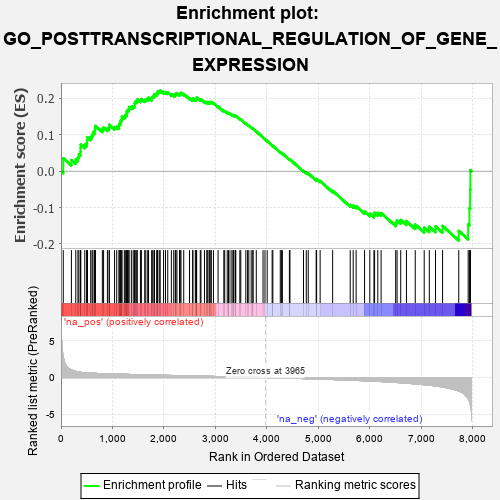
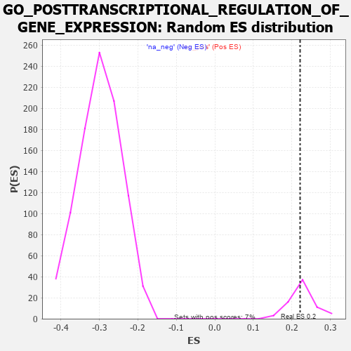

| | | Dataset | 7d |
| Phenotype | NoPhenotypeAvailable |
| Upregulated in class | na_pos |
| GeneSet | GO_POSTTRANSCRIPTIONAL_REGULATION_OF_GENE_EXPRESSION |
| Enrichment Score (ES) | 0.22145814 |
| Normalized Enrichment Score (NES) | 0.97792387 |
| Nominal p-value | 0.5277778 |
| FDR q-value | 0.7615487 |
| FWER p-Value | 1.0 |
Table: GSEA Results Summary

Fig 1: Enrichment plot: GO_POSTTRANSCRIPTIONAL_REGULATION_OF_GENE_EXPRESSION
Profile of the Running ES Score & Positions of GeneSet Members on the Rank Ordered List
| PROBE | GENE SYMBOL | GENE_TITLE | RANK IN GENE LIST | RANK METRIC SCORE | RUNNING ES | CORE ENRICHMENT | | 1 | PCBP4 | | | 44 | 2.875 | 0.0356 | Yes |
| 2 | BCL3 | | | 202 | 1.047 | 0.0306 | Yes |
| 3 | DPH3 | | | 287 | 0.844 | 0.0319 | Yes |
| 4 | NUP85 | | | 329 | 0.772 | 0.0378 | Yes |
| 5 | CNOT7 | | | 348 | 0.750 | 0.0462 | Yes |
| 6 | DPH6 | | | 378 | 0.719 | 0.0528 | Yes |
| 7 | PLD1 | | | 381 | 0.716 | 0.0628 | Yes |
| 8 | AXIN2 | | | 383 | 0.713 | 0.0729 | Yes |
| 9 | CNOT6 | | | 462 | 0.655 | 0.0723 | Yes |
| 10 | LARP6 | | | 498 | 0.630 | 0.0769 | Yes |
| 11 | NUP54 | | | 505 | 0.627 | 0.0851 | Yes |
| 12 | CNOT2 | | | 514 | 0.625 | 0.0931 | Yes |
| 13 | APEX1 | | | 577 | 0.604 | 0.0938 | Yes |
| 14 | SNIP1 | | | 604 | 0.593 | 0.0990 | Yes |
| 15 | NEMF | | | 620 | 0.589 | 0.1055 | Yes |
| 16 | RBM4 | | | 649 | 0.576 | 0.1102 | Yes |
| 17 | PARN | | | 660 | 0.572 | 0.1171 | Yes |
| 18 | DPH1 | | | 669 | 0.570 | 0.1243 | Yes |
| 19 | DPH2 | | | 803 | 0.531 | 0.1149 | Yes |
| 20 | RAE1 | | | 827 | 0.524 | 0.1195 | Yes |
| 21 | NSUN2 | | | 901 | 0.506 | 0.1174 | Yes |
| 22 | TDRD7 | | | 936 | 0.498 | 0.1202 | Yes |
| 23 | MATR3 | | | 937 | 0.498 | 0.1273 | Yes |
| 24 | AKT1 | | | 1040 | 0.476 | 0.1211 | Yes |
| 25 | PTCD3 | | | 1082 | 0.467 | 0.1226 | Yes |
| 26 | NUP93 | | | 1127 | 0.459 | 0.1235 | Yes |
| 27 | NCK2 | | | 1131 | 0.458 | 0.1297 | Yes |
| 28 | PSMD7 | | | 1152 | 0.454 | 0.1336 | Yes |
| 29 | NUP43 | | | 1160 | 0.453 | 0.1392 | Yes |
| 30 | PSMD2 | | | 1181 | 0.450 | 0.1431 | Yes |
| 31 | CLP1 | | | 1182 | 0.450 | 0.1496 | Yes |
| 32 | NSUN5 | | | 1230 | 0.442 | 0.1499 | Yes |
| 33 | PUS10 | | | 1249 | 0.438 | 0.1539 | Yes |
| 34 | CNOT3 | | | 1274 | 0.435 | 0.1571 | Yes |
| 35 | EIF3D | | | 1276 | 0.435 | 0.1632 | Yes |
| 36 | DKC1 | | | 1292 | 0.431 | 0.1674 | Yes |
| 37 | MTG1 | | | 1317 | 0.426 | 0.1705 | Yes |
| 38 | NRDE2 | | | 1320 | 0.425 | 0.1763 | Yes |
| 39 | EIF2A | | | 1366 | 0.416 | 0.1765 | Yes |
| 40 | NOCT | | | 1402 | 0.409 | 0.1779 | Yes |
| 41 | NUP88 | | | 1429 | 0.404 | 0.1804 | Yes |
| 42 | RBM10 | | | 1430 | 0.404 | 0.1862 | Yes |
| 43 | PTBP1 | | | 1441 | 0.402 | 0.1907 | Yes |
| 44 | RMND1 | | | 1470 | 0.396 | 0.1928 | Yes |
| 45 | TAF15 | | | 1481 | 0.393 | 0.1971 | Yes |
| 46 | UQCC1 | | | 1542 | 0.384 | 0.1950 | Yes |
| 47 | BOLL | | | 1561 | 0.381 | 0.1981 | Yes |
| 48 | CDK4 | | | 1626 | 0.370 | 0.1953 | Yes |
| 49 | RXRA | | | 1647 | 0.365 | 0.1979 | Yes |
| 50 | TNPO1 | | | 1684 | 0.359 | 0.1985 | Yes |
| 51 | XPO5 | | | 1700 | 0.357 | 0.2017 | Yes |
| 52 | PTBP3 | | | 1763 | 0.344 | 0.1987 | Yes |
| 53 | AGO2 | | | 1767 | 0.343 | 0.2032 | Yes |
| 54 | NUP58 | | | 1787 | 0.340 | 0.2057 | Yes |
| 55 | PSMD4 | | | 1811 | 0.335 | 0.2075 | Yes |
| 56 | FMR1 | | | 1816 | 0.334 | 0.2118 | Yes |
| 57 | PSMD6 | | | 1858 | 0.326 | 0.2112 | Yes |
| 58 | NUP62 | | | 1871 | 0.324 | 0.2144 | Yes |
| 59 | DCP1A | | | 1877 | 0.323 | 0.2183 | Yes |
| 60 | TRUB2 | | | 1908 | 0.319 | 0.2191 | Yes |
| 61 | EIF3B | | | 1926 | 0.317 | 0.2215 | Yes |
| 62 | MYEF2 | | | 1992 | 0.306 | 0.2175 | No |
| 63 | JMJD4 | | | 2029 | 0.301 | 0.2172 | No |
| 64 | DDX49 | | | 2073 | 0.295 | 0.2160 | No |
| 65 | PSME4 | | | 2143 | 0.285 | 0.2112 | No |
| 66 | C1QBP | | | 2189 | 0.278 | 0.2095 | No |
| 67 | TRAP1 | | | 2219 | 0.274 | 0.2097 | No |
| 68 | WTIP | | | 2228 | 0.272 | 0.2126 | No |
| 69 | PSMF1 | | | 2251 | 0.268 | 0.2136 | No |
| 70 | NSUN4 | | | 2301 | 0.260 | 0.2111 | No |
| 71 | EIF3K | | | 2314 | 0.258 | 0.2132 | No |
| 72 | SEC13 | | | 2330 | 0.256 | 0.2150 | No |
| 73 | NCBP2 | | | 2383 | 0.248 | 0.2119 | No |
| 74 | SARNP | | | 2496 | 0.227 | 0.2008 | No |
| 75 | EIF3H | | | 2558 | 0.219 | 0.1962 | No |
| 76 | PSMD5 | | | 2560 | 0.218 | 0.1992 | No |
| 77 | PDE12 | | | 2608 | 0.211 | 0.1962 | No |
| 78 | NUP50 | | | 2625 | 0.209 | 0.1971 | No |
| 79 | PUM2 | | | 2627 | 0.209 | 0.2000 | No |
| 80 | EIF3E | | | 2634 | 0.207 | 0.2022 | No |
| 81 | MARF1 | | | 2704 | 0.198 | 0.1962 | No |
| 82 | DDX1 | | | 2718 | 0.196 | 0.1974 | No |
| 83 | XRN1 | | | 2786 | 0.185 | 0.1915 | No |
| 84 | EIF3C | | | 2832 | 0.179 | 0.1883 | No |
| 85 | PA2G4 | | | 2840 | 0.177 | 0.1899 | No |
| 86 | CIRBP | | | 2876 | 0.170 | 0.1879 | No |
| 87 | DAPK3 | | | 2880 | 0.169 | 0.1899 | No |
| 88 | DPH5 | | | 2909 | 0.164 | 0.1887 | No |
| 89 | RBM4B | | | 2918 | 0.163 | 0.1900 | No |
| 90 | XPO1 | | | 2960 | 0.156 | 0.1870 | No |
| 91 | SRRT | | | 3050 | 0.143 | 0.1777 | No |
| 92 | GCNT2 | | | 3162 | 0.128 | 0.1653 | No |
| 93 | PSMD9 | | | 3179 | 0.125 | 0.1651 | No |
| 94 | RCC1L | | | 3228 | 0.117 | 0.1606 | No |
| 95 | PUS7 | | | 3254 | 0.113 | 0.1590 | No |
| 96 | NUP98 | | | 3261 | 0.112 | 0.1599 | No |
| 97 | SMAD3 | | | 3303 | 0.105 | 0.1561 | No |
| 98 | SMAD1 | | | 3337 | 0.099 | 0.1533 | No |
| 99 | PUM3 | | | 3354 | 0.096 | 0.1527 | No |
| 100 | RBM8A | | | 3355 | 0.096 | 0.1540 | No |
| 101 | DDX3X | | | 3388 | 0.091 | 0.1512 | No |
| 102 | TUT4 | | | 3394 | 0.090 | 0.1519 | No |
| 103 | CNOT1 | | | 3473 | 0.081 | 0.1431 | No |
| 104 | UNK | | | 3491 | 0.079 | 0.1420 | No |
| 105 | MAPK3 | | | 3589 | 0.062 | 0.1305 | No |
| 106 | NOLC1 | | | 3623 | 0.056 | 0.1271 | No |
| 107 | LTN1 | | | 3647 | 0.052 | 0.1249 | No |
| 108 | DHX9 | | | 3693 | 0.044 | 0.1198 | No |
| 109 | CASC3 | | | 3727 | 0.037 | 0.1161 | No |
| 110 | CNBP | | | 3728 | 0.037 | 0.1166 | No |
| 111 | DGCR8 | | | 3792 | 0.029 | 0.1090 | No |
| 112 | GCN1 | | | 3923 | 0.006 | 0.0925 | No |
| 113 | NCOR1 | | | 3961 | 0.000 | 0.0877 | No |
| 114 | PCIF1 | | | 4004 | -0.009 | 0.0825 | No |
| 115 | DPH7 | | | 4100 | -0.024 | 0.0707 | No |
| 116 | MTOR | | | 4114 | -0.025 | 0.0694 | No |
| 117 | PCID2 | | | 4258 | -0.051 | 0.0518 | No |
| 118 | PSME3 | | | 4280 | -0.056 | 0.0499 | No |
| 119 | RAN | | | 4299 | -0.059 | 0.0485 | No |
| 120 | COA3 | | | 4435 | -0.083 | 0.0324 | No |
| 121 | CDC37 | | | 4446 | -0.084 | 0.0323 | No |
| 122 | CPEB2 | | | 4709 | -0.141 | 0.0008 | No |
| 123 | HELZ | | | 4763 | -0.150 | -0.0038 | No |
| 124 | TERT | | | 4801 | -0.157 | -0.0063 | No |
| 125 | PRKDC | | | 4955 | -0.189 | -0.0231 | No |
| 126 | DXO | | | 4964 | -0.191 | -0.0214 | No |
| 127 | PURA | | | 5032 | -0.205 | -0.0270 | No |
| 128 | CELF4 | | | 5275 | -0.266 | -0.0542 | No |
| 129 | LARP1 | | | 5616 | -0.349 | -0.0926 | No |
| 130 | PSMD1 | | | 5674 | -0.367 | -0.0946 | No |
| 131 | TIA1 | | | 5731 | -0.386 | -0.0963 | No |
| 132 | SET | | | 5895 | -0.434 | -0.1109 | No |
| 133 | TUT7 | | | 5997 | -0.471 | -0.1170 | No |
| 134 | CALR | | | 6077 | -0.499 | -0.1200 | No |
| 135 | UBB | | | 6090 | -0.503 | -0.1143 | No |
| 136 | ROCK1 | | | 6152 | -0.520 | -0.1146 | No |
| 137 | SMAD2 | | | 6216 | -0.541 | -0.1149 | No |
| 138 | PTBP2 | | | 6499 | -0.661 | -0.1415 | No |
| 139 | ACE | | | 6526 | -0.674 | -0.1352 | No |
| 140 | TPR | | | 6597 | -0.709 | -0.1340 | No |
| 141 | EGFR | | | 6708 | -0.765 | -0.1370 | No |
| 142 | HFM1 | | | 6879 | -0.855 | -0.1465 | No |
| 143 | GRM5 | | | 7053 | -0.969 | -0.1547 | No |
| 144 | DDX5 | | | 7152 | -1.037 | -0.1524 | No |
| 145 | QKI | | | 7272 | -1.145 | -0.1512 | No |
| 146 | UBC | | | 7410 | -1.274 | -0.1504 | No |
| 147 | DCP2 | | | 7724 | -1.833 | -0.1642 | No |
| 148 | PSMD3 | | | 7907 | -2.887 | -0.1460 | No |
| 149 | PSMD8 | | | 7931 | -3.286 | -0.1019 | No |
| 150 | PASK | | | 7946 | -3.674 | -0.0510 | No |
| 151 | DAPK1 | | | 7950 | -3.767 | 0.0027 | No |
Table: GSEA details [plain text format]

Fig 2: GO_POSTTRANSCRIPTIONAL_REGULATION_OF_GENE_EXPRESSION: Random ES distribution
Gene set null distribution of ES for GO_POSTTRANSCRIPTIONAL_REGULATION_OF_GENE_EXPRESSION